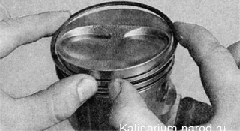

Поршневые кольца и шатунные вкладыши двигателя 1,6i - замена
Для выполнения работы потребуется оправка для обжима поршневых колец.
Снятие
Г Снимаем головку блока цилиндров.
2. Снимаем маслозаборник
3. Поворачивая коленчатый вал по часовой стрелке, устанавливаем поршень первого цилиндра в нижнее положение.
4. Торцовым ключом на 14 мм отворачиваем две гайки крепления крышки шатуна первого цилиндра и снимаем крышку шатуна.
5. Уперев ручку молотка в поршень, выталкиваем его вверх и извлекаем поршень из цилиндра.
6. Вынимаем вкладыш из шатуна и его крышки.
При разборке шатуна не выпрессовывайте из него болты.
7. Зажимаем поршень за шатун в тисках.
8. Слегка раздвинув замок кольца, снимаем верхнее компрессионное кольцо.

9. Аналогичным образом снимаем нижнее компрессионное кольцо.
10. Снимаем маслосъемное кольцо...
...и его расширитель.
Установка
1. Тщательно очищаем поршень от нагара и отложений. Осматриваем поршень и шатун. Трещины на них недопустимы.
2. Новые кольца подбираем в соответствии с диаметром поршня — номинального или ремонтного размера. На кольцах номинального размера обозначения отсутствуют, ремонтные кольца увеличены в диаметре на 0,4 или 0,8 мм и имеют маркировку «40» и «80» соответственно.
3. Перед установкой новых колец набором щупов измеряем зазор между поршневым кольцом и стенкой канавки, в которую кольцо будет установлено.
Если зазор превышает максимально допустимый (см. табл. 16.3), поршень подлежит замене.
Маслосъемное кольцо и верхнее компрессионное кольцо устанавливаем надписями «ТОР», «ВАЗ» или другой вверх.
Нижнее компрессионное кольцо ориентируем таким образом, чтобы проточкой оно было направлено вниз или надписью «ТОР» вверх.
1. Кольца надеваем на поршень следующим образом: раздвинув замок кольца (не более, чем это требуется для надевания кольца на поршень), заводим на поршень сначала замок, а затем тыльную часть кольца.
Новые кольца устанавливаем на поршень, начиная с расширителя маслосъемного кольца. После установки маслосъемного кольца, замок расширителя должен находиться развернутым на 180° относительно замка кольца.
После установки колец на поршень разворачиваем их замками таким образом, чтобы замок верхнего компрессионного кольца располагался под углом 45° к оси поршневого пальца, замок нижнего компрессионного кольца разворачиваем на 180°, а замок маслосъемного кольца — на 90° относительно замка верхнего компрессионного кольца.
2. Смазываем чистым моторным маслом поршень, кольца и внутреннюю поверхность цилиндра.
3. Надеваем оправку на поршень и обжимаем ею кольца, периодически слегка постукивая ручкой молотка по. оправке для самоустановки колец.
4. Вытираем насухо постели вкладышей в шатуне и крышке и устанавливаем в нижнюю головку шатуна вкладыши.
Допустимый зазор в канавке поршневого кольца
Кольцо |
Зазор между кольцом и стенкой канавки, мм |
Верхнее компрессионное кольцо |
0,04-0,075 |
Нижнее компрессионное кольцо |
0,03-0,065 |
Маслосъемное кольцо |
0,02-0,055 |
5. Смазываем внутренние поверхности вкладышей и шатунную шейку коленчатого вала чистым моторным маслом. Поворачивая коленчатый вал, переводим шейку в крайнее нижнее положение.
6. Устанавливаем поршень на блок и ориентируем его так, чтобы стрелка на днище поршня была направлена в сторону шкива коленчатого вала (см. ниже).
7. Прижимая оправку к блоку и постукивая ручкой молотка по днищу поршня, утапливаем его в цилиндр, одновременно следя за продвижением шатуна к шейке коленчатого вала.
8. Устанавливаем на шатун крышку в сборе с вкладышем и затягиваем ее гайки моментом 43,32—53,51 П-м (4,42-5,46 кгс-м).
Крышки шатунов невзаимозаменяемые. На шатуне и его крышке указан номер цилиндра, в который шатун должен быть установлен. На собранном шатуне цифры должны располагаться с одной стороны.
Кольца трех других поршней заменяем таким же способом.
После установки всех поршней собираем двигатель в последовательности, обратной разборке.